| . |
The Trigger Modes for Line Scan Cameras (AcquisitionApplets)
2.2 Delay and Additional Deadtime
Related Documents
1 Overview
| 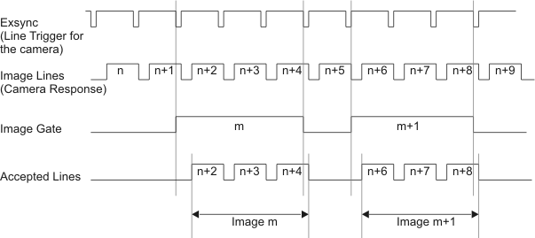 |
| Figure 1: Overview over typical line trigger signals |
The Trigger System for line scan cameras falls into two separate subsystems, the Line Trigger and the Image Trigger. While the Line Trigger subsystem is responsible for controlling the acquisition of lines by the camera, the Image Trigger subsystem controls the way how these lines form images.
Since the Line Trigger subsystem might be in charge of controlling the camera, it is able to generate camera control signals, like Exsync, which are available to the the camera via the Camera Link CC signals.
The Image Trigger subsystem generates only one internal signal, the Image Gate signal, which groups the lines transferred from the camera into images.
Figure 1 shows the typical setup for a line triggered image acquisition. The falling edge of the Exsync opens the shutter of the line scan camera. With the rising edge of Exsync, the exposure time is up and the camera transfers the recorded line. The Image Trigger subsystem is synchronized to the line generation to ensure the acquisition of complete lines. All lines from the camera are accepted as long as the Image Gate is active at the beginning of a transferred line. The last line of an image is the line during the transfer of which the Image Gate becomes inactive.
2 Line Trigger
The line trigger controls the signal Exsync which is sent to the camera and is responsible for the acquisition of image lines. The signal is generated as a periodic signal by the frame grabber (grabber-controlled mode) or by an external trigger input signal (external trigger input).
The Line Trigger subsystem generates the signals Exsync and Exsync2. Exsync2 is the Exsync signal with a user defined delay. Therefore, in the following only the Exsync signal is described.
2.1 Line Trigger Modes
2.1.1 Grabber-Controlled
| 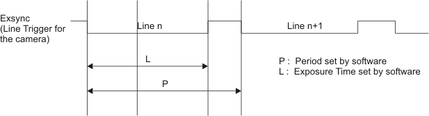 |
| Figure 2: Grabber Controlled line trigger mode. |
IThe Line Trigger mode "Grabber-Controlled" is used to feed the line camera with a periodic Exsync signal. By default, the Exsync signal is configured to low-active, period 20µs and an exposure time of 19µs. These values can be modified via software, even while the grabbing is in progress. However, at all times, L<P has to be respected. You can guarantee this by setting P before L when increasing Period and Exposure, or setting L before P when decreasing them.
2.1.2 External Trigger
| 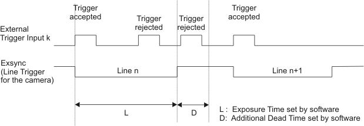 |
| Figure 2: External Line Trigger |
In the "External Trigger" mode, the image acquisition is controlled by an external signal that is received at the the trigger input. A rising edge of the signal (can be switched to the falling edge via software) executes the generation of the camera trigger Line trigger. The time of exposure and the polarity of the signal are configurable via software. The configuration of the period is irrelevant. During the exposure phase, no new trigger is accepted.
2.1.3 Gated Line Trigger
| 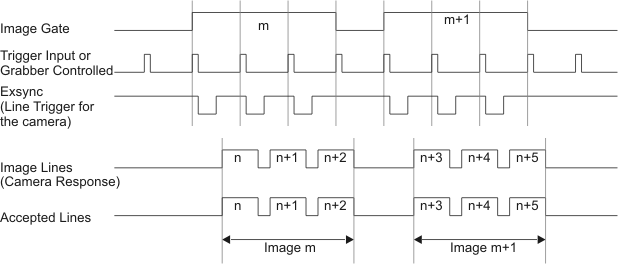 |
| Figure 3: Exsync generation which is gated by the Image Gate |
So far the Line Trigger generation was completely independant from the Image Trigger subsystem. However, it is possible to supress the Exsync generation while no lines are accepted by the Image Trigger, i.e., the Image Gate is low.
The Gated Line Trigger variant is applicable for both Line Trigger modes, thus, there are four Line Trigger modes available in total. The "Grabber-Controlled" mode becomes the "Gated Grabber-Controlled" mode, and the "External Trigger" mode becomes the "Gated External Trigger" mode.
2.2 Delay and Additional Deadtime
| 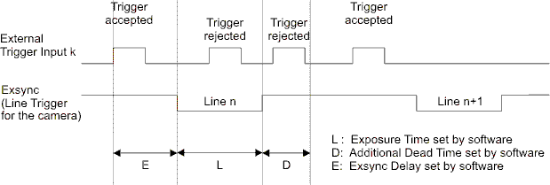 |
| Figure 4: Delay and additional deadtime |
With the Line Trigger Delay it is possible to delay the Exsyc generation with respect to the incoming external trigger input signal.
2.3 Downscaling
With downscaling it is possible to suppress the external trigger input signals. By accepting only every 2nd, 3rd, ... trigger input to gernerate an Exsync, the line frequency of the camera is reduced (i.e., the vertical image resolution is reduced) without the need to change the hardware setup (e.g., exchanging the used encoder).
2.3.1 Downscaling the Periodic Exsync
| 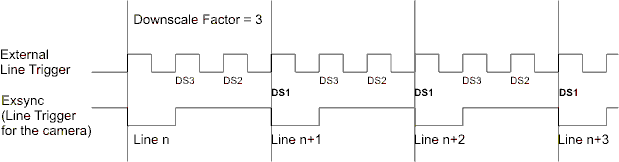 |
| Figure 5: Downscaling |
Downscaling can only be done in the "External Trigger" modes. For the simple "External Trigger" mode the Exsync is derived from the trigger input and more ore less periodical. There is no beginning or ending with respect to the image. Thus, the only available parameter is the downscale factor itself.
2.3.2 Downscaling the Gated Exsync
| 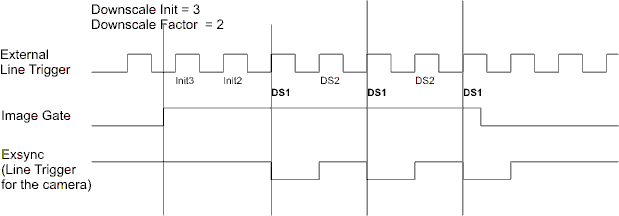 |
| Figure 6: Downscale Init and Downscale |
Downscaling can only be done in the "External Trigger" modes. For the "Gated External Trigger" mode the Exsync is derived from the trigger input but only available during the Image Gate. Therfore, the Image Gate defines the beginng and the end of the Exsync generation. It is possible to set different downscale factors for the first Exsync (the first line) and the remaining image (all following lines until the end of the Image Gate). Thus, the available parameters are the Downscale Init and the Downscale Factor.
3 Image Generation
The Image Trigger system of a line camera applet enables three modes for generating images out of a continuous stream of image lines from a line camera.
3.1 Image Trigger Modes
3.1.1 Free-Run
| 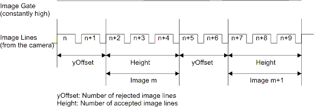 |
| Figure 7: Overview over the microEnable trigger system |
The default Image Trigger mode is "Free-Run". "Free-Run" accepts all lines sent by the camera and groups them into images of Height lines. If parameter yOffset is greater than Zero, a number of yOffset lines between two sequential images won't be acquired.
3.1.2 External Image Trigger
| 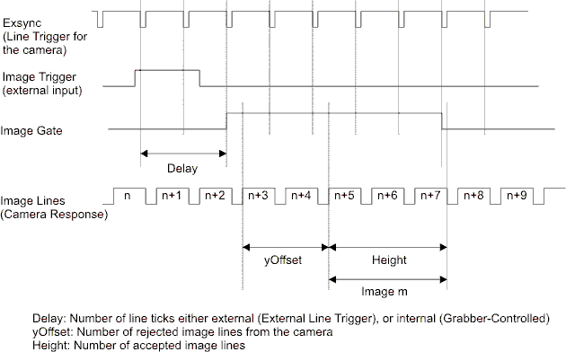 |
| Figure 8: External Image Trigger mode with Grabber-Controlled Line Trigger. A Delay of 2 lines for the Image Gate and an yOffset of 2 lines for the image is displayed. |
With the Image Trigger mode "External Trigger" it is possible to synchronize the image acquisition to an external trigger pulse, e.g., to one of the four trigger input sources or to a software trigger pulse.
The rising edge of a signal executes the acquisition of Height image lines.
With the parameter Delay, you can configure a delay by lines for the activation of the Image Gate. This delays the start of the image acquisition. The Parameter yOffset (as in "Free-Run") rejects the first lines from the camera. Delay and yOffset seem to have the same effect - however, the difference is that yOffset doesn't affect the Image Gate, which is relevant when using the Gated Line Trigger mode.
For details about the generated signal Flash, refer to section Flash.
3.1.3 Gated Multibuffer
| 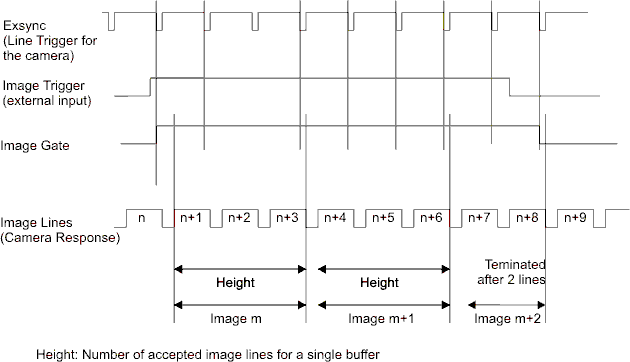 |
| Figure 9: Image Trigger mode "Gated Multibuffer" interprets the external Trigger Input as a gate for the image acquisition. |
The Image Trigger mode "Gated Multibuffer" is very similar to the External Trigger mode. With the rising edge of the image trigger input it is possible to start the acquisition. Again, a Delay can be specified (as in External Trigger mode). However, the trigger input is interpreted as a gate and the image terminates with the (delayed) falling edge. The parameter Height defines the maximum height of an image, thus, the image spans across several buffers if the trigger input exceeds Height lines. The information whether the Image Gate was still active at the end of the frame, or if the image was terminated by a falling Image Gate, is available by bit 31 of the Image Tag (Bit 31 of the Image Tag is 1 if the image is the last image of the acquisition process, Bit 31 is 0 if another image belonging to the same Image Gate follows).
3.1.4 Gated Singlebuffer
| 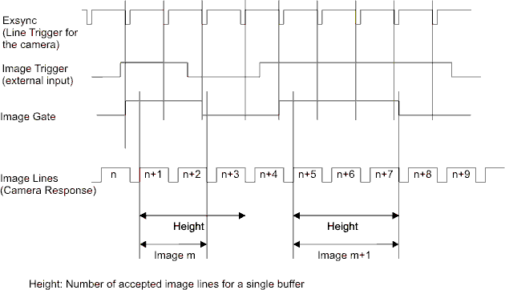 |
| Figure 10: Gated Singlebuffer |
The Image Trigger mode "Gated Singlebuffer" is almost identical to the "Gated Multibuffer" mode. However, only a single image of maximum Height lines is acquired.
3.2 Delay
The Delay for the Image Gate and the Flash of the Image Trigger is set via software in "line ticks". The time for a line tick is either defined by the Period of the frame grabbers line signal generator (see section Grabber-Controlled mode), or the external trigger input (see section External Trigger mode for the line trigger).
If you use your camera in "Free-Run" mode but still want to define a Delay for the Image Trigger, it is possible to configure the "Grabber-Controlled" mode and to disable the Exsync output (Exsync Off). Only the output is disabled and the configured Period time is available for the Image Gate.
If you use the External Line Trigger mode, a line tick is defined by the external trigger input. Therefore, if you use downscaling for the Exsync generation, the Delay is defined on a sub-line scale.
3.3 Flash
The Flash signal generated by the applet is similar to the Flash signal for area scan cameras. The Flash is triggered by the external trigger input like the Image Gate. However, the Flash has its own Delay (again in line ticks).
The Flash signal lasts for one line tick and might be most useful when synchonizing a 2nd frame grabber.
| Forward |